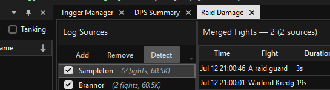

Merging multiple player logs into a complete raid-wide view.
The Raid Damage window combines log files from multiple players and deduplicates overlapping events so you get an accurate raid-wide picture of damage dealt and healing done — without double-counting events that appeared in more than one log.
Click the Raid DPS icon in the left sidebar, or use View → DPS → Raid Damage (Multi-Log). It opens as a dockable panel inside the main window (the same docking area as the Fight List and other tabs) rather than a separate OS window, so you can view it side-by-side with the rest of the parser by dragging its tab.
In the Raid Damage window's Log Sources panel, use the Add
button to load each player's log file. Repeat for every player whose log you have collected.
Each file must follow the usual eqlog_PlayerName_server.txt naming convention —
that's how the source's player name gets identified.
There is no fixed limit on the number of logs you can load. Load as many as you have — the more logs, the more complete the merged picture.

When multiple players log the same damage event — for example, a wizard's nuke that three nearby players all witnessed — that event appears in all three logs. The merger detects these duplicates and keeps only one copy.
Players' system clocks are rarely perfectly synchronized. Once you've loaded two or more sources, the app automatically detects the time offset between each log (by aligning fights they have in common) and adjusts all events onto a shared timeline before deduplication and aggregation — you don't need to do anything for this. If you ever need to override it, right-click a source for Set time offset..., or use the Detect button to re-run detection after loading more sources.
The fight list in the Raid Damage window shows encounters built from the combined logs. Select a fight to view its merged stats. The right-hand pane has three tabs — DPS, Tanking, and Healing — that work the same as their single-player counterparts: click a column to sort, right-click for per-spell breakdowns.
Because events from all logs are combined, players who were out of range of some events are still accurately represented as long as at least one other player's log captured those events.